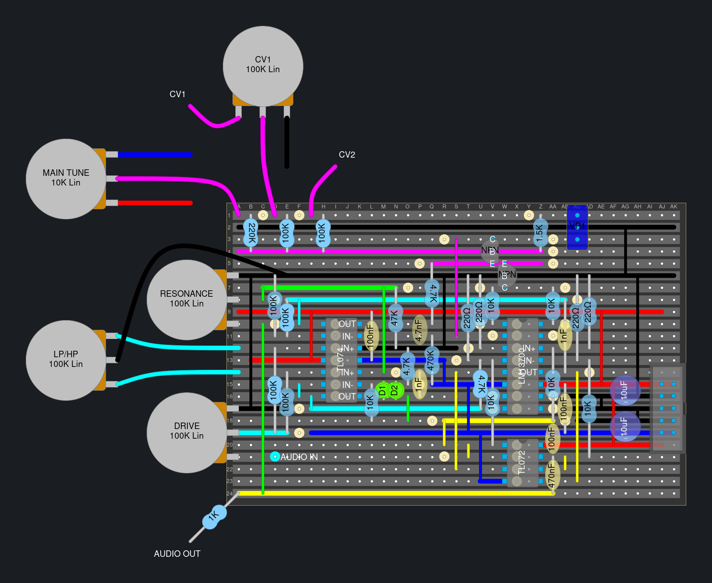

MS-20 Filter
The MS-20 is a synthesizer made by Korg and it has a pretty nice sounding filter. René Schmitz has made a popular clone of it and has schematics avavailable on his site. There is also a version designed by Kassutronics that adds a pot for blending between low/highpass and a drive knob to attenuate the input signal.
Schematics
René Schmitz’s schematic (RS-20)
 This is a redrawn version with component names matching those on Kassutronics' KS-20 schematic. All credit goes to René Schmitz.
This is a redrawn version with component names matching those on Kassutronics' KS-20 schematic. All credit goes to René Schmitz.
Luther’s redrawn RS-20 schematic
Juanito Moore’s schematic (Based on the RS-20)
Veroboard Layouts
Look Mum No Computer’s layout
Sandelinos' Layout (KS-20)

Perfboard Layouts
Luther’s layout (RS-20)
Videos
- Kristian Blåsol - “Late MS20 HP & LP VCF by Réne Schmitz (2nd MS20 filter) - DIY Modular in a Week 7.4”
- juanito moore - “You can build this MS-20 VCF with me!"
- Point-to-point with no PCB.
- LOOK MUM NO COMPUTER - “Build An Analog Synth Filter Made EASYYYY."
Blogs
- Kassutronics KS-20
- AUDIODiWHY blog post about the RS-20
- Eddy Bergman’s blog post about the MS-20
- Eddy Bergman’s blog post about a dual MS-20
- Tim Stinchcombes extensive write up with a ton of more links